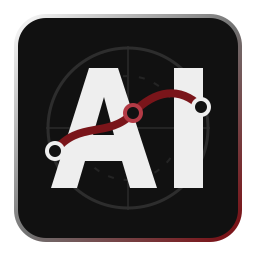

Current Role
Geographic Information System Developer at gistec, Apr 2026 to present, Amman, Jordan.

Ahmad Issa Full Stack DeveloperI build web interfaces and practical full stack systems with a strong front-end foundation. My work combines JavaScript, TypeScript, React, REST APIs, responsive UI, and clear delivery habits. GIS, Esri products, and support work add domain depth without changing the main focus.
Geographic Information System Developer at gistec, Apr 2026 to present, Amman, Jordan.
Bachelor's Degree in Computer Engineering, United Arab Emirates University, Aug 2020 to Dec 2024.
Modern Geo Apps, Front-End Development, Project Management Foundations, Data Science, and Networking.
Building web applications, custom interfaces, and GIS workflows with JavaScript, TypeScript, React patterns, REST APIs, and ArcGIS technologies.
Troubleshot platform access, service behavior, logs, data issues, customer incidents, and support workflows with a focus on clear diagnosis and reliable delivery.
Developed responsive interfaces, custom widgets, dashboard views, and REST API integrations for enterprise web and GIS workflows.
Co-authored the IEEE-published paper Evaluating a Virtual Assistant's Effectiveness in Enhancing in-Vehicle Safety: A Comparative Study for ASET 2025 and contributed to a smart city optimization platform using IoT and machine learning concepts.
Static HTML, CSS, and JavaScript portfolio built around a fast, responsive developer profile.
Reusable React and TypeScript widgets for filtering, map interaction, and ArcGIS services.
ArcGIS Experience Builder dashboards and widgets for map-driven public-sector workflows.
Case analysis, access checks, service diagnostics, log review, and RCA documentation.
IEEE-published ASET 2025 conference paper on multimodal in-vehicle safety interfaces.
IoT and machine learning concept for urban planning, environmental sensing, and decisions.
Embedded navigation and computer vision prototype for line following and obstacle avoidance.
I focus on clean interfaces, practical APIs, responsive delivery, and systems that solve real problems.